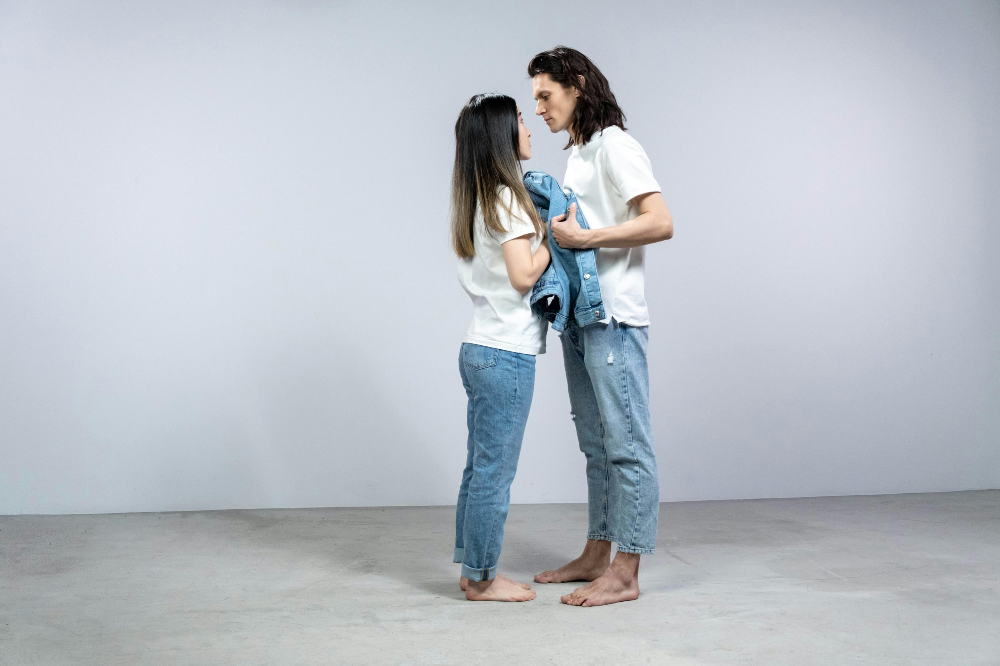

在包養的世界裡，每位甜心都渴望遇見那位懂得欣賞和珍惜自己的乾爹。無論你是剛踏入包養網的新手，還是正在尋找理想 sugar daddy 的甜心，每個人心中都有對「優質乾爹」的憧憬。理想的乾爹不只給予物質支持，更能讓人感到關心與被重視。
找到合適的 sugar daddy，可以讓甜心們的生活變得更有安全感，也更有成就感。這篇文章將分享實用的小技巧和心法，帶你認識包養與包養網的秘密，幫助你在這個繽紛的圈子裡，找到最懂你的那一位。只要方法對了，甜心與乾爹之間的交流，也能自然又真誠，讓彼此都收穫幸福與驚喜。
認識包養文化與角色分工
包養這個詞在現代社會已不再是禁忌，反而代表著一種新型的人際關係選擇。隨著包養網的出現，越來越多人更清楚地界定這個圈子的核心角色與互動方式。理解這個文化，能幫助甜心和潛在乾爹在彼此期待間找到平衡，進而建立長久溫暖的關係。
包養與包養網的定義
在討論包養時，首先要釐清常見名詞：
- 包養：泛指雙方透過協議建立的互利關係，通常伴隨物質或精神支持。
- 包養網：是一種提供配對平台的網站，讓 sugar baby 與 sugar daddy 更容易找到彼此。
這些網路平台多設計得安全又匿名，保障雙方隱私，減少不必要的誤會或糾紛。對多數人來說，包養不僅是經濟上的支援，更代表一種情感的陪伴，緩解生活中的孤獨感。
角色介紹：甜心與乾爹
在包養世界裡，存在兩個主要角色：
- 甜心（sugar baby）：多數是年輕女性，也有少數男性。她們期待在經濟、生活與事業上獲得支持，願意用陪伴和關心回報。
- 乾爹（sugar daddy）：通常是經濟條件較好，事業有成的成熟人士。希望透過支持甜心，獲得關懷、理解和貼心陪伴。
兩方相遇，像交換人生的「溫暖抱枕」，不僅滿足彼此需求，也在現實中找到了紓壓出口。
雙方關係與常見互動
包養關係給人的印象常被外界誤解，其實在這個圈子中，多數人追求的是真誠和信任。常見互動模式包括：
- 定期約會：一起用餐、看電影或旅行
- 生活關心：平常透過訊息問候，分享生活趣事
- 物質支持：乾爹提供現金、禮物或進修費用，甜心以陪伴回報
這些互動，有如一種「溫柔的守護」，讓雙方生活更有色彩而不單調。
現實期待與生活場景
雖然包養帶來許多美好期待，但現實裡每一段 sugar daddy 與 sugar baby 的關係都有其特殊風景。例如：
- 一位在台北工作的乾爹，會每月提供生活費，作為甜心工作與學業的安全網
- 有甜心利用包養支持，存錢出國進修，讓未來選擇更自由
- 雙方也會一起參加聚會或公益活動，分享彼此人生觀點
其實，包養關係並不像外界想像只停留在金錢互動，更像是大人版的「天使與守護者故事」，讓彼此有了軟著陸的港灣。理解這些文化與角色分工，能幫助每個人有明確定位，也為進一步找到合適對象打下基礎。
尋找乾爹前該做的心理與安全準備
面對包養網上的機會與挑戰，甜心在註冊與互動前必須先檢視自己的心態，並培養妥善的安全意識。無論你希望獲得金錢支持還是情感陪伴，進入包養圈前的心理建設與資料保護都是基本功。只要做好準備，甜心才能自在地展現自我，找到真正理解與欣賞自己的 sugar daddy。
情感與物質平衡的心態建立: 分析甜心如何看待關係、調整金錢與感情的比例，理解包養不只是利益交換
甜心進入包養世界，往往對金錢和情感兩者有不同期待。有些人著重物質，有些人則渴望情感陪伴。建立正確心態能避免後續的委屈與失落。
- 自信是基礎：首先要相信自己的價值不是只有外表，陪伴、支持與分享人生觀點同樣重要。
- 劃清界線，清楚表達需求和底線：不必被對方的條件迷惑，要明確知道自己能接受的金錢與情感比例。
- 包養不是單向索取：這是一段雙向付出的關係，甜心能帶給乾爹溫暖與理解；乾爹則以實際行動支持甜心成長。
- 認識彼此需求：有些 sugar daddy 需要貼心陪伴，有些重視精神共鳴。找到價值觀與生活習慣合拍的對象，更容易相處。
舉個例，優質關係像是並肩走路的夥伴，兩人步伐若能配合，就能走得更遠更舒適。金錢與情感如天平，哪一邊傾斜都不會長久。甜心應與乾爹坦誠討論彼此期待，主動尋求平衡，這樣包養才會成為生活的加分項，而不是負擔。
個人隱私與資料保護要點: 強調在包養網上註冊、聊天和見面過程中保護隱私的必需行為
在包養網註冊帳號與建立檔案時，資訊安全是最重要的一步。尤其剛起步的甜心，容易因為信任而大意，這時更要謹慎。
以下幾點建議可協助甜心守護自己的隱私：
- 不要透露本名或詳細身分資料：初期溝通僅用暱稱或英文名，避免直接分享真實個人資訊。
- 避免曝光住家、就學或工作地點：即使乾爹看似友善，也要確保雙方足夠了解並建立信任，才考慮透露更多細節。
- 每次見面前先約在公開場所：選擇有監視器與人流的地方，像是咖啡廳或餐廳。這樣即使首次見面也能大大降低風險。
- 自行準備交通工具：不要讓對方接送回家，也不輕易透露居住位置。
- 謹慎面對金錢交易：所有協商條件最好在平台內聊清楚，並保存聊天記錄。一開始不要貿然接受大額轉帳或要求貸款。
包養網通常會有驗證機制，但保護自己永遠是最實際的方式。每次互動前，自問「如果資料外流，我能承擔後果嗎？」保持一點警覺，能幫你在包養網世界裡玩得更自在也更安心。
在心理層面上，甜心更要記得，設定個人界線並不代表不信任別人，而是對自己的保護。當你學會善用小心、信任與理性，就能在 sugar baby 的道路上愈走愈穩，也能吸引更優質、懂尊重的乾爹。
選擇包養網與打造吸引力檔案
在包養世界裡，第一步就是挑選合適的包養網與建立讓人難忘的個人檔案。甜心如果能站穩腳步、展現實力，往往在一開始就占了好幾分優勢。想找對乾爹，平台的選擇、註冊過程，還有誠懇又吸引人的自我介紹，缺一不可。這個環節就像選錄取通知書，要選對平台、寫對自我介紹，才能吸引真正有誠意的 sugar daddy。
理想的個人簡介與照片指引: 點出常見錯誤，強調真誠和得體的魅力，讓人留下好印象
註冊包養網時，個人簡介和照片是一張入場券，也是甜心自信和態度的展現。不必過度包裝，誠懇、具體、得體，才能吸引懂欣賞的乾爹。下面這些重點，讓甜心一眼被看到：
- 真誠贏得信任：寫簡介時直接表達自己的興趣、價值觀，不要複製他人範本。真誠分享生活點滴，像是喜歡看書、愛運動，會讓對方更有親近感。
- 避開誇大與炫耀：誇張的經歷、炫耀金錢或外表，反而容易給人不真實的感覺，讓葉公好龍的乾爹避而遠之。
- 照片以自然為主：千萬不要用過度修圖或模糊的照片，也不要只上傳一張自拍。最佳做法是多角度、生活化、有微笑的清晰大頭照。
- 留意穿著和背景：得體的服飾和乾淨明亮的背景最加分。太過暴露或雜亂的照片，容易招來錯誤關注，也會失去優質對象青睞。
- 明確期望條件：在簡介裡簡單說明對乾爹的期待（例如欣賞溫和、願意傾聽、不以金錢為唯一討論重點），讓雙方早早對焦，減少以後的不必要誤會。
常見錯誤還包括全文只有一句話、簡介寫得模稜兩可，或是一進聊天室就談利益。甜心要記得，乾爹們追求的也是真誠和得體。把每一次介紹當成職場的自薦信，重點放在“你的故事”、“你的態度”跟“你想建立怎樣的關係”。只要展現最自然的自己，真正欣賞你的人就會被吸引。
安全篩選、避免詐騙乾爹: 列舉常見詐騙行為、預設紅線，讓讀者分辨真假sugar daddy，減少風險

Photo by MART PRODUCTION
註冊再好的包養網，也難免會遇到幾個動機不單純的人。甜心如果懂得辨識詐騙，能避免許多麻煩。以下提醒是許多甜心親身經歷的共通心得：
- 不正常的財務要求：剛開聊幾句就要求銀行帳號、請甜心先付保證金、下載奇怪 APP。遇到就該立刻停止聯絡。
- 甜言蜜語過頭：剛聊天就說愛你、聊結婚、承諾月入十萬。真實的 sugar daddy 都會觀察一段時間，不會用空口誇大話當開場。
- 無法見面只談感情：永遠只願意在線上互動、遲遲不肯視頻、推拖見面理由，這種通常不是乾爹，就是冒名的假帳號。
- 資料模糊或盜圖：頭像照片不清、資料矛盾，或是聊天內容毫無邏輯。遇到請主動請對方影音驗證，真誠的乾爹都能坦然面對。
甜心在操作包養網時，也該設下自己的底線紅線：
- 從不先提供金融帳戶或個人敏感訊息
- 初次見面堅持公開場合
- 不接受私人聯絡或離開平台太快
- 不與態度詭異、問話閃爍的對象續約
包養平台本身也是一層濾網。選擇有客服、透明驗證機制、用戶評論多的平台，發現異常也能及時求助。世界雖大，甜心只要懂得篩選，安全始終能放在第一位。
這些基礎功，讓甜心在挑選包養網與打造檔案時，穩紮穩打，吸引真正懂得尊重、具誠意的乾爹，讓每一次相遇都能從「你好」開始就安心又自在。
初次互動與建立信任感
在包養世界中，第一印象決定雙方是否願意繼續深入瞭解。甜心想吸引優質乾爹，必須懂得用心互動，從聊天到見面的每一個細節都需要真誠與尊重。建立信任不是一朝一夕的事，而是一點一滴累積出來的安心感。底下會從互動禮儀到第一次見面的安全守則，讓甜心自然展現溫度，也讓乾爹感受到你的真誠。
聊天技巧與細節: 舉例溫暖且有禮貌的開場白、話題選擇、問答互動，避免聊到隱私敏感內容
初次與乾爹互動時，語氣與話題非常重要。很多甜心太心急或表現太冷，會讓乾爹誤會動機。簡單自然的問候和輕鬆的話題，才能讓對話順利展開。
- 開場白範例：
-「嗨，很高興在包養網遇見你！」
-「今天心情還不錯，你呢？」
-「你好啊，看到你的簡介很有趣。」 - 適合的話題：
- 旅行趣事、影集推薦、美食經驗、運動興趣
- 分享自己的小目標，像是學一門語言、想去的城市
- 輕描淡寫自己的生活，讓對方有機會互動
避免初期就問「你月給多少？」、「家住哪？」或詢問對方財務和家庭狀況。這類敏感問題會讓人感到被審問，失去信任感。適時讚美乾爹的談吐、品味，但不要過於奉承或虛偽。
在聊天過程中，提問要有分寸：
- 「你平常工作忙嗎？有沒有什麼興趣？」
- 「最近喜歡看什麼電影？」
- 「有推薦的餐廳嗎？」
這些互動讓對話雙向進行，減少尷尬，慢慢建立熟悉感。同時，甜心也要懂得觀察乾爹的回覆，若對方總想聊金錢、要求私下聯繫，就要提高警覺。
安全的第一次會面流程: 建議選擇公開場合，通知好友自身動向，關注乾爹舉止，保護自己安全
第一次見面，是甜心與乾爹從線上走到線下的關鍵一步。選對見面的方式和地點，不僅保障自身，也展現你重視自己。
Photo by Mark Dubery
步驟清單：
- 地點選擇
- 約在咖啡廳、商場餐廳這類人多明亮的場合。
- 盡量避免出租屋、偏僻小巷或私人空間。
- 通知信任的好友
- 出門前將自己的定位、見面時間、預計離開時間告知朋友。
- 若能，即時分享行蹤，緊急時有人協助。
- 保持警覺觀察
- 初次見面避免飲用陌生人遞上的酒水或食物。
- 留意乾爹的言行舉止，優質 sugar daddy 都會尊重界線。
- 自行安排交通
- 自己搭車前往和離開，不讓對方知悉住家位置。
- 不接受對方提出的私家車接送。
- 冷靜處理突發狀況
- 對方若出現冒犯言行，果斷結束見面。
- 感到不安時，尋找周圍店員或致電朋友協助。
**守護自己的底線，是甜心的基本功。**農夫播種時會先選對土壤，甜心選對見面方式和節奏，同樣能讓安全和信任慢慢茁壯。當自己感到被尊重，自然也能展現最自信的那一面，吸引真正懂得包容和欣賞的乾爹。
建立信任感，需要耐心和坦率。只有從第一次互動開始，甜心才能在包養網這條路上一步步踏實前行，邁向長久且美好的 sugar daddy 關係。
長期維持穩定包養關係的關鍵
打造一段穩定又讓彼此都滿意的包養關係，靠的是日常點滴的經營。甜心該怎麼成為讓乾爹捨不得離開的sugar baby？除了首次印象要好，更需要懂得溝通、建立信任、以及長期展現個人價值。這些能力不僅讓人欣賞，也能讓包養網上的每一次相遇都留下深刻回憶。
建立溝通與信任的訣竅: 分享有效對話、表達感受、設定界線的方法

Photo by cottonbro studio
穩定的包養關係很像細水長流的友情，重點在於願意互相傾聽，勇敢說出心聲。包養網上那份坦白，比任何美麗包裝都要打動人。
- 有效對話：甜心可以從關心乾爹日常的小事做起，像是詢問工作狀況、生活點滴。遇見意見不同時，用平和的語氣表達自己的看法，不急著爭對錯，而是交換想法。
- 真誠表達感受：感到開心或被支持時，不要吝嗇說出口。如果遇到讓人不舒服的狀況，也能適時描述自己的情緒，而非壓抑或責怪。
- 設定界線：在親密互動和個人空間之間找到平衡。遇到難以接受的請求，甜心不需強顏歡笑，直接誠懇地表明底線。這種堅持不僅自我保護，反而更能讓乾爹尊重與珍惜。
持續溝通與建立信任，是讓包養升溫的祕訣。甜心偶爾也能主動分享生活點滴，或邀請乾爹一起嘗試新的事物。這些主動會讓關係更緊密自然。
小提示：
- 保持訊息回應的頻率，不必秒回，但要讓對方知道你在乎。
- 對於雙方協議的內容，記得定期溝通檢查是否需要調整。
持續自我提升與價值展現: 說明甜心如何持續進步、增值自身魅力，讓乾爹長期願意投資與照顧
受歡迎的sugar baby，往往懂得讓自己不斷進步，這不只是外表，也包含談吐、才華與生活態度。乾爹會因為甜心的成長而願意投入更多支持。
- 專注自我成長：可以從學習語言、投資新興趣、或參加在職訓練開始。這種積極進步的態度，不僅提升信心，也會讓包養網上的乾爹們刮目相看。
- 展現生活品味：有自己的審美和生活方式，像是熱愛閱讀、健身、旅行。甜心多分享自己的見聞與目標，乾爹也會因此對你更有認同感。
- 保持獨立自主：即使是在包養關係裡，甜心有自理生活的能力，懂得管理時間與情緒，能成熟應對生活變化，乾爹自然更信任你、願意長期投資。
- 懂得給予關懷與鼓勵：不只是接受照顧，甜心也可以在乾爹沮喪時給出溫暖的支持或實用建議。平等互動，彼此扶持，才能讓感情如同老酒越陳越香。
加分行動：
- 參加專業講座或課程，並在聊天時自然分享心得
- 偶爾為乾爹準備小驚喜（手寫卡片、貼心問候）
- 經營自己的社群或興趣專頁，展現積極生活態度
包養這條路，不再只靠外在吸引。做個「內外兼修」的甜心，把進步當日常，把溝通變成彼此最堅實的連結，才能守住長期包養裡那份專屬的溫度和支持。
結論
優質乾爹不只是在包養網上隨手可得，而是甜心細心挑選與經營的結果。心態正確、資訊保護、真誠互動，每一步都影響著包養生活的質感。懂得設定界線，懂得自我提升，更懂得用信任換取長久的陪伴與支持，這才是sugar baby真正擁有幸福的關鍵。
每一次用心，都會在乾爹與甜心之間種下信任的種子。包養本質是雙方都能自由呼吸的陪伴，而不是純粹利益交換。只要找到安全與自在的步伐，就有機會收穫超越物質的美好。
感謝讀者耐心閱讀，願每位想了解包養文化的人，都能用信任與勇氣，勇敢追求屬於自己的理想人生。如果你有更多經驗或想法，歡迎留言共同討論，讓包養、乾爹、甜心的故事更加精彩。